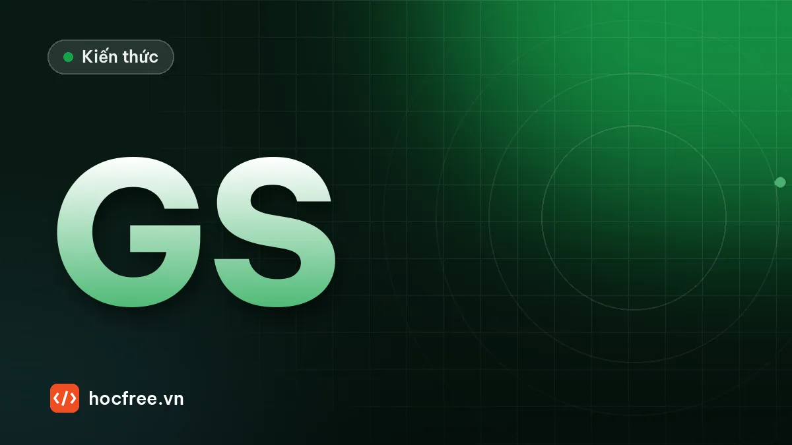

Global hay rolling shutter, area scan hay line scan: chọn đúng camera
Mô phỏng và đo méo rolling shutter, tính tốc độ dòng và encoder cho line scan, đọc datasheet cảm biến và băng thông giao tiếp.

Học xong bài này, bạn sẽ
- Chọn kiểu màn trập cho vật chuyển động
- Biết khi nào cần camera line scan
- Đọc thông số cảm biến cơ bản
Nên học trước: Bài tập chặng 5: viết đặc tả một trạm kiểm tra
Nội dung bài viết
Chặng 5 "Industrial Vision" kết thúc bằng một bản đặc tả trạm kiểm tra: tốc độ, nhịp, tiêu chí OK/NG, kịch bản nghiệm thu. Chặng 6 trả lời câu hỏi tiếp theo: phần cứng nào tạo ra được ảnh đủ tốt cho bản đặc tả đó. Hai lựa chọn đầu tiên khi chọn camera công nghiệp quyết định ảnh có dùng được hay không, trước cả độ phân giải: global shutter hay rolling shutter, và area scan hay line scan. Bài này giải thích từng loại bằng mô phỏng có số đo, dạy cách tính tốc độ dòng và encoder cho camera line scan, và cách đọc các thông số cảm biến trong datasheet (kích thước pixel, độ phân giải, tốc độ khung, độ sâu bit, băng thông giao tiếp, dải động). Bài sau, "Chọn camera và ống kính: độ phân giải, FOV, tiêu cự", dùng các thông số này để tính cấu hình cụ thể.
1. Cảm biến ảnh hoạt động thế nào (vừa đủ để chọn camera)
Mỗi pixel là một phần tử quang điện: trong thời gian phơi sáng (exposure), photon đập vào pixel tạo ra electron và electron được tích lại; hết thời gian phơi sáng, điện tích được đọc ra (readout), chuyển thành số (ADC) và gửi đi. Gần như mọi camera công nghiệp mới hiện nay dùng cảm biến CMOS; cảm biến CCD đời trước gần như đã ngừng sản xuất. Khác biệt quan trọng giữa các cảm biến CMOS nằm ở cách sắp xếp thời gian phơi sáng và đọc ra của các hàng pixel, đó chính là kiểu màn trập điện tử.
| Rolling shutter | Global shutter | |
|---|---|---|
| Phơi sáng | Từng hàng bắt đầu và kết thúc lệch nhau một khoảng "thời gian dòng" (line time), từ trên xuống | Mọi pixel bắt đầu và kết thúc phơi sáng cùng lúc; mỗi pixel có phần tử nhớ để giữ điện tích chờ đọc |
| Vật đứng yên | Tốt | Tốt |
| Vật chuyển động | Méo nghiêng (skew), hình tròn thành elip nghiêng, cánh quạt quay thành hình cong | Không méo hình; chỉ nhòe nếu phơi sáng dài (bài "Đèn strobe và đồng bộ trigger") |
| Đèn chớp | Chỉ dùng được khi mọi hàng cùng đang phơi sáng lúc đèn chớp (phơi sáng dài, trạm tối) | Đơn giản: xung nằm trong cửa sổ phơi sáng |
| Phổ biến ở | Điện thoại, webcam, nhiều camera độ phân giải rất cao giá thấp | Phần lớn camera Machine Vision cho dây chuyền |
| Giá | Thấp hơn ở cùng độ phân giải | Cao hơn; khoảng cách giá đã thu hẹp nhiều |
2. Rolling shutter: mô phỏng và đo độ méo
Với rolling shutter, hàng thứ r phơi sáng muộn hơn hàng đầu một khoảng r · t_dòng. Trong thời gian đó vật đã đi thêm một đoạn, nên mỗi hàng "thấy" vật ở một vị trí khác. Độ lệch giữa hàng đầu và hàng cuối:
skew (pixel) = v_px · (H − 1) · t_dòng
v_px : tốc độ vật trên ảnh (pixel/s) = tốc độ (mm/s) / kích thước pixel trên vật (mm/pixel)
H : số hàng được đọc (chiều cao ảnh hoặc ROI)
t_dòng : thời gian dòng của cảm biến (µs), thường vài µs đến vài chục µs
(H − 1) · t_dòng ≈ thời gian đọc hết khung hìnhMô phỏng một thanh thẳng đứng chạy ngang trên băng tải 0,5 m/s, pixel trên vật 0,1 mm (vật chạy 5.000 pixel/giây), cảm biến 480 hàng với thời gian dòng 15 µs. Mỗi hàng được tính đúng phần diện tích pixel bị thanh che (khử răng cưa). Sau đó ta tìm mép trái của thanh ở từng hàng với độ chính xác dưới pixel, rồi fit một đường thẳng để đo độ nghiêng:
import numpy as np
import cv2
H, W = 480, 640
V_PX = 500.0 / 0.1 # 0,5 m/s, 0,1 mm/pixel → 5000 pixel/s
T_DONG = 15e-6 # thời gian dòng (s)
PHOI_SANG = 50e-6 # phơi sáng mỗi hàng (s), ngắn để nhòe nhỏ
X0, RONG = 200.0, 60.0 # mép trái thanh lúc t = 0 và bề rộng (pixel)
def hang_anh(t_bat_dau):
"""Một hàng ảnh: tích phân 10 thời điểm trong khoảng phơi sáng (vật đi được V_PX·PHOI_SANG)."""
cot = np.arange(W)
tong = np.zeros(W)
for k in range(10):
x = X0 + V_PX * (t_bat_dau + PHOI_SANG * (k + 0.5) / 10)
tong += np.clip(np.minimum(cot + 1, x + RONG) - np.maximum(cot, x), 0, 1) # phần pixel bị che
return 40 + 180 * tong / 10
def chup(rolling):
return np.array([hang_anh(r * T_DONG if rolling else 0.0) for r in range(H)])
def mep_trai(hang, muc=130.0):
x = int(np.argmax(hang >= muc)) # pixel đầu tiên vượt mức
return x - 1 + (muc - hang[x - 1]) / (hang[x] - hang[x - 1])
for ten, rolling in (("global shutter", False), ("rolling shutter", True)):
img = chup(rolling)
cv2.imwrite(f"{ten.split()[0]}.png", img.astype(np.uint8))
mep = np.array([mep_trai(h) for h in img])
doc, _ = np.polyfit(np.arange(H), mep, 1) # pixel lệch mỗi hàng
skew = round(doc * (H - 1), 1) + 0.0 # + 0.0: tránh in "-0.0"
goc = round(np.degrees(np.arctan(doc)), 1) + 0.0
print(f"{ten:15s}: mép hàng đầu {mep[0]:6.1f}, hàng cuối {mep[-1]:6.1f} → skew {skew:5.1f} px, nghiêng {goc:4.1f}°")
print(f"Lý thuyết: {V_PX:.0f} px/s × {H - 1} hàng × {T_DONG * 1e6:.0f} µs = {V_PX * (H - 1) * T_DONG:.1f} px"
f" (đọc hết khung {(H - 1) * T_DONG * 1e3:.2f} ms)")global shutter : mép hàng đầu 199.6, hàng cuối 199.6 → skew 0.0 px, nghiêng 0.0°
rolling shutter: mép hàng đầu 199.6, hàng cuối 235.5 → skew 35.9 px, nghiêng 4.3°
Lý thuyết: 5000 px/s × 479 hàng × 15 µs = 35.9 px (đọc hết khung 7.19 ms)Mô phỏng khớp công thức: hàng cuối lệch hàng đầu khoảng 36 pixel, tức 3,6 mm trên vật. Một thanh thẳng đứng thành nghiêng vài độ; một lỗ tròn thành elip nghiêng; khoảng cách giữa hai chi tiết nằm ở trên và dưới ảnh bị sai vài mm. Không có ngưỡng hay hiệu chuẩn nào sửa được, vì độ méo thay đổi theo tốc độ băng tải. Mở global.png và rolling.png để so sánh.
Hai điều suy ra từ công thức:
- Giảm ROI theo chiều dọc giảm skew (ít hàng hơn), nhưng không xóa được nó. Phơi sáng ngắn không giảm skew: skew đến từ độ lệch giữa các hàng, không phải từ thời gian phơi sáng mỗi hàng.
- Rolling shutter với đèn chớp: nếu trạm tối hoàn toàn và phơi sáng mỗi hàng dài hơn thời gian đọc khung cộng độ rộng xung, sẽ có một khoảng thời gian mọi hàng cùng đang phơi sáng; đèn chớp trong khoảng đó cho ảnh không méo (ở ví dụ trên: phơi sáng ≥ 7,2 ms + xung). Một số camera có chế độ "global reset" hỗ trợ cách này. Đây là cách làm có điều kiện, chỉ đáng dùng khi bắt buộc phải dùng cảm biến rolling shutter (ví dụ độ phân giải rất cao, chi phí thấp) và trạm che kín được.
3. Area scan và line scan
Area scan là camera "bình thường": cảm biến hình chữ nhật, chụp cả khung hình một lần. Dễ lắp, dễ căn chỉnh, đèn và ống kính phổ biến, phù hợp phần lớn ứng dụng với chi tiết rời.
Line scan có cảm biến chỉ một hàng pixel (hoặc vài hàng: hai hàng cho màu/độ nhạy cao hơn, hoặc nhiều hàng kiểu TDI cộng dồn tín hiệu khi vật đi qua). Camera chụp liên tục từng dòng trong khi vật chạy qua dưới nó; phần mềm hoặc card thu ghép các dòng thành ảnh 2D. Hệ quả:
- Chiều ngang (vuông góc với chuyển động): độ phân giải = số pixel của dòng, thường 2k, 4k, 8k, 16k pixel; hiếm area scan nào có 16.000 pixel trên một chiều với giá hợp lý.
- Chiều dọc (theo chuyển động): không giới hạn. Ảnh dài bao nhiêu tùy bạn, vật liệu chạy liên tục không có "đường nối" giữa các khung.
- Kích thước pixel theo chiều dọc = quãng đường vật đi giữa hai dòng = v / tốc độ dòng. Muốn pixel vuông thì tốc độ dòng phải bám theo tốc độ vật, nên line scan gần như luôn được kích bằng encoder.
- Chiếu sáng chỉ cần một dải hẹp nhưng rất mạnh (đèn dải, line light), vì thời gian phơi sáng mỗi dòng chỉ vài chục µs. Không có hiện tượng méo kiểu rolling shutter vì mỗi dòng là một lần chụp.
| Bài toán | Nên dùng | Vì sao |
|---|---|---|
| Chi tiết rời trên băng tải, khay, robot gắp | Area scan, global shutter | Một khung hình chứa cả chi tiết; dễ lắp đặt |
| Cuộn liên tục: giấy, màng nhựa, vải, thép cán, nhôm lá, kính tấm | Line scan + encoder | Vật không có điểm đầu cuối; bề rộng lớn cần hàng nghìn pixel; không có chồng lấn/khe hở giữa các khung |
| Bề mặt trụ: thân lon, chai, ống, ổ bi, lốp | Line scan + xoay vật một vòng (encoder trên trục quay) | "Trải phẳng" toàn bộ chu vi thành một ảnh chữ nhật, không méo do mặt cong như khi chụp area scan từ một phía |
| Vật lớn cần độ phân giải rất cao: tấm PCB, tấm pin mặt trời, màn hình phẳng, gỗ tấm | Line scan trên băng tải hoặc bàn trượt | Ghép hàng chục MP mỗi giây, ánh sáng đều trên cả vật, không phải ghép nhiều khung area scan |
| Vật đứng yên, ngân sách thấp | Area scan rolling shutter | Chấp nhận được khi không có chuyển động lúc chụp |
Nhược điểm của line scan: phải có chuyển động đều và đo được; lắp đặt, căn thẳng hàng cảm biến với đèn dải và ống kính khó hơn nhiều; đèn đắt; dữ liệu lớn thường cần card thu (frame grabber) hoặc giao tiếp tốc độ cao; với chi tiết rời phải tự cắt ảnh theo từng chi tiết.
4. Tính toán cho camera line scan
Ví dụ: kiểm tra màng nhựa khổ 1.600 mm chạy 180 m/phút (3 m/s), lỗi nhỏ nhất 0,5 mm, muốn lỗi phủ ít nhất 4 pixel. Encoder gắn con lăn chu vi 300 mm, 2.500 xung/vòng, giải mã ×4.
import math
KHO_MM, BIEN_MM = 1600.0, 25.0 # khổ màng và biên mỗi bên
V_MM_S = 180 / 60 * 1000 # 180 m/phút → mm/s
LOI_MM, PX_MOI_LOI = 0.5, 4
CHU_VI, PPR, NHAN = 300.0, 2500, 4 # encoder trên con lăn
CAC_CO = [2048, 4096, 8192, 16384] # số pixel dòng phổ biến
fov = KHO_MM + 2 * BIEN_MM
px_can = LOI_MM / PX_MOI_LOI
can = fov / px_can
n_px = next(n for n in CAC_CO if n >= can)
px = fov / n_px
toc_do_dong = V_MM_S / px # dòng/giây để pixel vuông
print(f"FOV {fov:.0f} mm, pixel ≤ {px_can:.3f} mm → cần ≥ {can:.0f} px → chọn camera {n_px} px,"
f" pixel {px:.4f} mm")
print(f"Tốc độ dòng cho pixel vuông: {toc_do_dong / 1000:.1f} kHz → phơi sáng ≤ {1e6 / toc_do_dong:.1f} µs mỗi dòng")
print(f"Dữ liệu 8 bit: {n_px * toc_do_dong / 1e6:.0f} MB/s")
dem_mm = PPR * NHAN / CHU_VI
print(f"Encoder: {dem_mm:.2f} xung đếm/mm; cần {1 / px:.2f} dòng/mm → chia {dem_mm * px:.2f}")
for chia in (3, 4): # bộ chia nguyên: 1 dòng mỗi `chia` xung đếm
doc = chia / dem_mm
print(f" chia {chia}: pixel dọc {doc:.4f} mm (ngang {px:.4f}), tỉ lệ dọc/ngang {doc / px:.3f},"
f" tốc độ dòng {V_MM_S / doc / 1000:.1f} kHz")FOV 1650 mm, pixel ≤ 0.125 mm → cần ≥ 13200 px → chọn camera 16384 px, pixel 0.1007 mm
Tốc độ dòng cho pixel vuông: 29.8 kHz → phơi sáng ≤ 33.6 µs mỗi dòng
Dữ liệu 8 bit: 488 MB/s
Encoder: 33.33 xung đếm/mm; cần 9.93 dòng/mm → chia 3.36
chia 3: pixel dọc 0.0900 mm (ngang 0.1007), tỉ lệ dọc/ngang 0.894, tốc độ dòng 33.3 kHz
chia 4: pixel dọc 0.1200 mm (ngang 0.1007), tỉ lệ dọc/ngang 1.192, tốc độ dòng 25.0 kHzBa kết luận rất thực tế từ vài dòng tính:
- 16k pixel, gần 30 kHz, khoảng 490 MB/s: vượt xa GigE (khoảng 115 MB/s) và cả USB3 Vision. Cần 10GigE, CoaXPress hoặc Camera Link với card thu, và PC xử lý được gần nửa GB ảnh mỗi giây (hoặc chia khổ màng cho 2–3 camera 8k).
- Phơi sáng dưới 34 µs mỗi dòng, liên tục: đèn dải cường độ rất cao chạy liên tục (không overdrive được với duty gần 100%).
- Bộ chia encoder không ra số nguyên (3,36). Chọn chia 3 thì pixel dọc nhỏ hơn ngang 11% (ảnh bị giãn dọc, tốc độ dòng tăng lên 33 kHz), chia 4 thì lớn hơn 19%. Có ba cách: chấp nhận pixel không vuông và quy đổi trong phần mềm (đo theo mm từng chiều); dùng bộ chia/nhân phân số nếu camera hoặc card thu hỗ trợ; hoặc chọn encoder/con lăn sao cho chia ra số nguyên. Tần số đếm ở 3 m/s là 100 kHz: kiểm tra ngõ vào encoder của camera hoặc card thu chịu được.
Điều gì xảy ra nếu chạy line scan ở tốc độ dòng cố định mà băng tải đổi tốc độ? Mô phỏng một tấm có các chấm tròn đường kính 10 mm, camera tính cho 1.000 mm/s (0,5 mm mỗi dòng), rồi băng tải giảm còn 700 mm/s ở giữa đoạn:
import numpy as np
import cv2
PX = 0.5 # mm/pixel ngang, và quãng đường mỗi dòng ở tốc độ danh định
TAM = [(x, y) for y in (20, 60, 100, 140) for x in (25, 50, 75)] # tâm các chấm tròn (mm)
R = 5.0 # bán kính 5 mm
def dong(y_mm):
"""Một dòng ảnh: các pixel ngang tại vị trí y_mm trên tấm (sáng = chấm tròn)."""
x = (np.arange(200) + 0.5) * PX
d = np.full_like(x, 1e9)
for cx, cy in TAM:
d = np.minimum(d, np.hypot(x - cx, y_mm - cy))
return np.where(d <= R, 255, 30).astype(np.uint8)
def toc_do(t): # mm/s: 1000, giảm còn 700 trong khoảng 0,05–0,11 s
return 700.0 if 0.05 <= t < 0.11 else 1000.0
def quet(dung_encoder):
y, t, dong_anh, y_dong_tiep = 0.0, 0.0, [], 0.0
dt = 1e-6
while y < 160:
y += toc_do(t) * dt
t += dt
if dung_encoder: # 1 dòng mỗi khi tấm đi được PX mm
if y >= y_dong_tiep:
dong_anh.append(dong(y))
y_dong_tiep += PX
elif len(dong_anh) < t * 1000.0 / PX: # 1 dòng mỗi PX/1000 s (tốc độ dòng cố định 2 kHz)
dong_anh.append(dong(y))
return np.array(dong_anh)
for ten, enc in (("Tốc độ dòng cố định", False), ("Kích bằng encoder", True)):
img = quet(enc)
cv2.imwrite("linescan_" + ("encoder" if enc else "co_dinh") + ".png", img)
n, _, st, _ = cv2.connectedComponentsWithStats((img > 128).astype(np.uint8))
ti_le = sorted({round(float(st[i, cv2.CC_STAT_HEIGHT] / st[i, cv2.CC_STAT_WIDTH]), 2) for i in range(1, n)})
print(f"{ten:20s}: ảnh {img.shape[0]} dòng, tỉ lệ cao/rộng các chấm tròn: {ti_le}")Tốc độ dòng cố định : ảnh 357 dòng, tỉ lệ cao/rộng các chấm tròn: [0.95, 1.4]
Kích bằng encoder : ảnh 321 dòng, tỉ lệ cao/rộng các chấm tròn: [0.95]Với tốc độ dòng cố định, các chấm đi qua lúc băng tải chậm bị kéo dài khoảng 1,4 lần theo chiều chuyển động (mỗi dòng chỉ đi 0,35 mm thay vì 0,5 mm), còn các chấm khác vẫn tròn: một phép đo kích thước sẽ sai tùy thời điểm. Kích bằng encoder thì mọi chấm tròn đều có tỉ lệ khoảng 1 (sai khác nhỏ là do lượng tử hóa pixel), bất kể tốc độ. Đây là cùng nguyên lý "theo quãng đường, không theo thời gian" của bài "Trigger, encoder và cycle time".
5. Đọc thông số cảm biến trong datasheet
| Thông số | Ví dụ | Ý nghĩa và cách dùng |
|---|---|---|
| Độ phân giải | 2448 × 2048 (5 MP) | Số pixel ngang × dọc. Quyết định kích thước pixel trên vật cùng với FOV (bài sau) |
| Kích thước pixel | 3,45 µm | Kích thước cảm biến = số pixel × kích thước pixel (8,45 × 7,07 mm). Pixel lớn thu nhiều ánh sáng hơn, ít đòi hỏi ống kính hơn |
| Định dạng quang học | 2/3", 1", 1.1" | Tên gọi theo quy ước cũ của ống hình, không phải đường chéo thật (2/3" có đường chéo khoảng 11 mm, không phải 16,9 mm). Dùng để chọn ống kính phủ đủ cảm biến |
| Kiểu màn trập | Global / rolling | Mục 2 |
| Tốc độ khung tối đa | 75 fps ở toàn khung | Giới hạn của cảm biến; tốc độ thật còn bị giới hạn bởi giao tiếp (mục dưới). Giảm ROI theo chiều dọc thường tăng tốc độ khung |
| Độ sâu bit (ADC, định dạng điểm ảnh) | 8 / 10 / 12 bit (Mono8, Mono12p…) | Số mức xám. 12 bit có ích khi cảm biến có dải động đủ lớn và bài toán cần (đo độ tương phản thấp); tốn băng thông hơn 8 bit 1,5–2 lần |
| Hiệu suất lượng tử (QE) | Ví dụ 65% ở 525 nm | Tỉ lệ photon thành electron theo bước sóng. Kiểm tra QE ở bước sóng của đèn (đỏ, hồng ngoại thường thấp hơn) |
| Dung lượng giếng (full well) | Ví dụ 10.000 e⁻ | Số electron tối đa một pixel giữ được trước khi bão hòa |
| Nhiễu đọc (temporal dark noise) | Ví dụ 2,5 e⁻ | Nhiễu nền khi không có ánh sáng |
| Dải động, SNR tối đa | dB | Dải động ≈ 20·log₁₀(full well / nhiễu đọc); SNR tối đa ≈ 10·log₁₀(full well) (giới hạn bởi nhiễu photon) |
| Giao tiếp | GigE Vision, USB3 Vision, 5/10GigE, CoaXPress, Camera Link | Băng thông, chiều dài cáp, cần card thu hay không |
Nhiều hãng công bố số đo theo chuẩn EMVA 1288 (QE, nhiễu, full well, dải động đo theo cùng một phương pháp), nhờ đó so sánh được camera giữa các hãng. Đoạn code dưới đây tính các con số suy ra từ datasheet. Danh mục cảm biến và băng thông thực tế là số tham khảo, làm tròn; băng thông thực tế phụ thuộc card mạng, cáp, máy tính và cấu hình gói tin:
import math
CAM_BIEN = [ # (tên, ngang, dọc, pixel µm, fps tối đa của cảm biến) — số liệu tham khảo, làm tròn
("1,6 MP", 1440, 1080, 3.45, 220),
("5 MP", 2448, 2048, 3.45, 75),
("12 MP", 4096, 3000, 3.45, 30),
("24,5 MP", 5328, 4608, 2.74, 20),
]
GIAO_TIEP = {"GigE": 115, "USB3 Vision": 380, "5GigE": 580, "10GigE": 1150} # MB/s thực tế (tham khảo)
BYTE = {"Mono8": 1.0, "Mono12p": 1.5} # Mono12p: 12 bit đóng gói, 1,5 byte/pixel
print("cảm biến | kích thước (mm) | chéo (mm) | MB/khung (Mono8) | fps tối đa: " + " | ".join(GIAO_TIEP))
for ten, w, h, p, fps_cb in CAM_BIEN:
rong, cao = w * p / 1000, h * p / 1000
mb = w * h * BYTE["Mono8"] / 1e6
fps = [min(fps_cb, bw / mb) for bw in GIAO_TIEP.values()]
print(f"{ten:8s} | {rong:5.2f} × {cao:5.2f} | {math.hypot(rong, cao):9.1f} | {mb:16.2f} | "
+ " | ".join(f"{f:5.1f}" for f in fps))
print("\n5 MP qua GigE theo định dạng điểm ảnh và ROI:")
for dinh_dang in BYTE:
for roi_h in (2048, 1024, 512):
mb = 2448 * roi_h * BYTE[dinh_dang] / 1e6
print(f" {dinh_dang:7s}, ROI 2448 × {roi_h:4d}: {mb:5.2f} MB/khung → {GIAO_TIEP['GigE'] / mb:6.1f} fps (giới hạn bởi GigE)")
full_well, nhieu = 10_000, 2.5 # e⁻ (ví dụ giả định)
print(f"\nDải động {20 * math.log10(full_well / nhieu):.1f} dB, SNR tối đa {10 * math.log10(full_well):.1f} dB,"
f" cần khoảng {math.log2(full_well / nhieu):.1f} bit để không mất mức xám do ADC")cảm biến | kích thước (mm) | chéo (mm) | MB/khung (Mono8) | fps tối đa: GigE | USB3 Vision | 5GigE | 10GigE
1,6 MP | 4.97 × 3.73 | 6.2 | 1.56 | 73.9 | 220.0 | 220.0 | 220.0
5 MP | 8.45 × 7.07 | 11.0 | 5.01 | 22.9 | 75.0 | 75.0 | 75.0
12 MP | 14.13 × 10.35 | 17.5 | 12.29 | 9.4 | 30.0 | 30.0 | 30.0
24,5 MP | 14.60 × 12.63 | 19.3 | 24.55 | 4.7 | 15.5 | 20.0 | 20.0
5 MP qua GigE theo định dạng điểm ảnh và ROI:
Mono8 , ROI 2448 × 2048: 5.01 MB/khung → 22.9 fps (giới hạn bởi GigE)
Mono8 , ROI 2448 × 1024: 2.51 MB/khung → 45.9 fps (giới hạn bởi GigE)
Mono8 , ROI 2448 × 512: 1.25 MB/khung → 91.8 fps (giới hạn bởi GigE)
Mono12p, ROI 2448 × 2048: 7.52 MB/khung → 15.3 fps (giới hạn bởi GigE)
Mono12p, ROI 2448 × 1024: 3.76 MB/khung → 30.6 fps (giới hạn bởi GigE)
Mono12p, ROI 2448 × 512: 1.88 MB/khung → 61.2 fps (giới hạn bởi GigE)
Dải động 72.0 dB, SNR tối đa 40.0 dB, cần khoảng 12.0 bit để không mất mức xám do ADC- Tốc độ khung thật = nhỏ hơn của (giới hạn cảm biến) và (băng thông / dung lượng khung). Camera 12 MP có cảm biến chạy 30 fps nhưng qua GigE chỉ khoảng 9 fps; với dây chuyền 10 sản phẩm/giây, camera đó không theo kịp (bài "Trigger, encoder và cycle time" đã cảnh báo trigger chồng).
- Chuyển sang Mono12p tốn thêm 50% băng thông: chỉ dùng khi cần. Cắt ROI theo chiều dọc là cách rẻ nhất để tăng tốc độ khung.
- Dải động 72 dB tương ứng khoảng 12 bit: xuất 8 bit (256 mức) bỏ đi một phần thông tin của cảm biến. Với phần lớn bài toán có chiếu sáng tốt, 8 bit là đủ; bài toán có cả vùng rất sáng và rất tối trong một ảnh mới cần 10–12 bit.
- Chiều dài cáp cũng là thông số chọn: GigE tới khoảng 100 m cáp đồng, USB3 thường vài mét (dài hơn cần cáp chủ động hoặc cáp quang), CoaXPress hàng chục mét tùy tốc độ.
6. Sai lầm thường gặp
- Chọn camera rolling shutter vì rẻ và nhiều pixel cho trạm có vật chuyển động; thử ở bàn với vật đứng yên nên không thấy méo.
- Nghĩ phơi sáng ngắn sẽ hết méo rolling shutter: phơi sáng ngắn chỉ giảm nhòe, không giảm skew.
- Đọc "fps tối đa" của cảm biến mà quên giới hạn của giao tiếp, của định dạng 12 bit, và của PC.
- Chạy line scan ở tốc độ dòng cố định trên băng tải đổi tốc độ, hoặc chọn encoder mà không tính bộ chia.
- Dùng line scan cho chi tiết rời khi một camera area scan làm được: thêm độ phức tạp lắp đặt, đèn, cắt ảnh mà không thêm lợi ích.
- Lẫn định dạng quang học với kích thước thật: luôn tính kích thước cảm biến từ số pixel × kích thước pixel.
7. Bài tập
Bài 1 (thực hành của bài). Liệt kê 3 bài toán nên dùng camera line scan và giải thích vì sao.
Xem đáp án
- Kiểm tra bề mặt cuộn vật liệu (màng nhựa, giấy, vải, thép/nhôm cán): vật liệu liên tục không có điểm bắt đầu/kết thúc để trigger area scan; khổ rộng 1–2 m cần hàng chục nghìn pixel theo chiều ngang; ghép dòng liên tục không có chồng lấn hay khe hở giữa các khung; đèn dải chiếu đều trên toàn khổ.
- Kiểm tra toàn bộ thân lon, chai, ống, ổ bi: xoay vật một vòng trước camera line scan (encoder trên trục quay) để "trải phẳng" chu vi thành một ảnh chữ nhật. Area scan nhìn từ một phía chỉ thấy khoảng một phần ba chu vi và bị méo do mặt cong, phải dùng 3–4 camera.
- Kiểm tra vật lớn với độ phân giải rất cao: tấm PCB, tấm pin mặt trời, tấm kính, màn hình phẳng, gỗ tấm chạy trên băng tải hoặc bàn trượt. Line scan 8k–16k cho ảnh hàng chục đến hàng trăm MP liền mạch, ánh sáng đều, trong khi area scan cần ghép nhiều khung với chồng lấn và hiệu chuẩn ghép.
Các đáp án khác cũng đúng nếu có lý do: kiểm tra đường ray hoặc mặt đường từ xe chạy, phân loại nông sản rơi tự do hoặc trên băng tải tốc độ cao, kiểm tra in ấn trên máy in cuộn.
Bài 2. Một camera rolling shutter có 1.080 hàng, thời gian dòng 10 µs. Vật chạy 1 m/s, pixel trên vật 0,2 mm. Tính skew giữa hàng đầu và hàng cuối (pixel và mm). Nếu chỉ dùng ROI 200 hàng thì sao?
Xem đáp án
v_px = 1000 / 0.2 # pixel/s
for hang in (1080, 200):
skew = v_px * (hang - 1) * 10e-6
print(f"{hang} hàng: skew {skew:.1f} px = {skew * 0.2:.1f} mm")1080 hàng: skew 54.0 px = 10.8 mm
200 hàng: skew 10.0 px = 2.0 mmToàn khung lệch gần 54 pixel (10,8 mm): không dùng được cho đo lường hay định vị. ROI 200 hàng giảm còn khoảng 10 pixel (2 mm), vẫn quá lớn cho phần lớn bài toán. Chọn global shutter.
Bài 3. Camera 12 MP (4096 × 3000) cần chụp 15 sản phẩm/giây. Với GigE (khoảng 115 MB/s) và USB3 Vision (khoảng 380 MB/s), ở Mono8 và Mono12p, cách nào đạt? Nếu chỉ cần vùng 4096 × 1200 thì sao?
Xem đáp án
for bw_ten, bw in (("GigE", 115), ("USB3 Vision", 380)):
for fmt, byte in (("Mono8", 1.0), ("Mono12p", 1.5)):
for h in (3000, 1200):
fps = bw / (4096 * h * byte / 1e6)
print(f"{bw_ten:11s} {fmt:7s} 4096×{h}: {fps:5.1f} fps {'ĐẠT' if fps >= 15 else 'không đạt'}")GigE Mono8 4096×3000: 9.4 fps không đạt
GigE Mono8 4096×1200: 23.4 fps ĐẠT
GigE Mono12p 4096×3000: 6.2 fps không đạt
GigE Mono12p 4096×1200: 15.6 fps ĐẠT
USB3 Vision Mono8 4096×3000: 30.9 fps ĐẠT
USB3 Vision Mono8 4096×1200: 77.3 fps ĐẠT
USB3 Vision Mono12p 4096×3000: 20.6 fps ĐẠT
USB3 Vision Mono12p 4096×1200: 51.5 fps ĐẠTToàn khung: chỉ USB3 Vision đạt (Mono8 khoảng 31 fps, Mono12p khoảng 21 fps, nếu cảm biến cho phép). Cắt ROI 4096 × 1200 thì GigE cũng đạt: Mono8 khoảng 23 fps, Mono12p khoảng 15,6 fps (sát giới hạn, không còn dự phòng). Nhớ kiểm tra thêm tốc độ khung tối đa của chính cảm biến ở ROI đó, chiều dài cáp (USB3 thường chỉ vài mét) và dự phòng cho trigger dồn dập.
Tóm tắt
- Rolling shutter phơi sáng lệch từng hàng: skew = v_px · (H − 1) · t_dòng, không giảm khi rút ngắn phơi sáng. Vật chuyển động → global shutter.
- Line scan: một dòng pixel, ghép theo chuyển động; dùng cho cuộn liên tục, bề mặt trụ xoay, vật lớn cần độ phân giải rất cao. Pixel dọc = v / tốc độ dòng → kích bằng encoder, tính bộ chia, kiểm tra tần số đếm.
- Line scan nhanh đòi đèn dải rất mạnh (phơi sáng vài chục µs liên tục) và băng thông lớn (hàng trăm MB/s).
- Datasheet: kích thước cảm biến = số pixel × kích thước pixel; định dạng "inch" không phải đường chéo thật; fps thật = min(cảm biến, băng thông / dung lượng khung); dải động ≈ 20·log₁₀(full well/nhiễu), so sánh qua số liệu EMVA 1288.
Bài tiếp theo: Chọn camera và ống kính: độ phân giải, FOV, tiêu cự, tính số pixel cần thiết từ dung sai và chọn tiêu cự từ trường nhìn và khoảng làm việc.
Bài tập thực hành
- Liệt kê 3 bài toán nên dùng line scan và giải thích vì sao.
Làm xong bài tập mới chuyển sang bài tiếp theo: tự viết code là cách duy nhất để nhớ lâu.